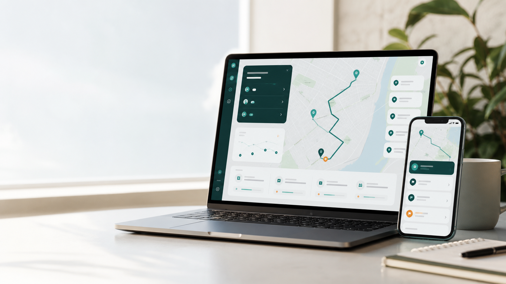

Оптимізація точок
Додавайте адреси, пріоритети й часові вікна, щоб швидко побудувати логічний порядок зупинок.

Розумне планування поїздок
Web Site Route допомагає швидко скласти оптимальний маршрут, побачити ключові точки та передати план команді або клієнту без зайвих таблиць.
Що всередині
Додавайте адреси, пріоритети й часові вікна, щоб швидко побудувати логічний порядок зупинок.
Діліться маршрутом з водіями, менеджерами або клієнтами через один актуальний план.
Оновлюйте зупинки та дедлайни без перерахунку всього маршруту вручну.
Приклад маршруту
Сервіс підходить для доставок, сервісних виїздів, локальних турів і будь-яких задач, де важливо бачити маршрут, час і відповідального.
Старт
Залиште контакти, і ми підготуємо коротке демо під ваш сценарій.